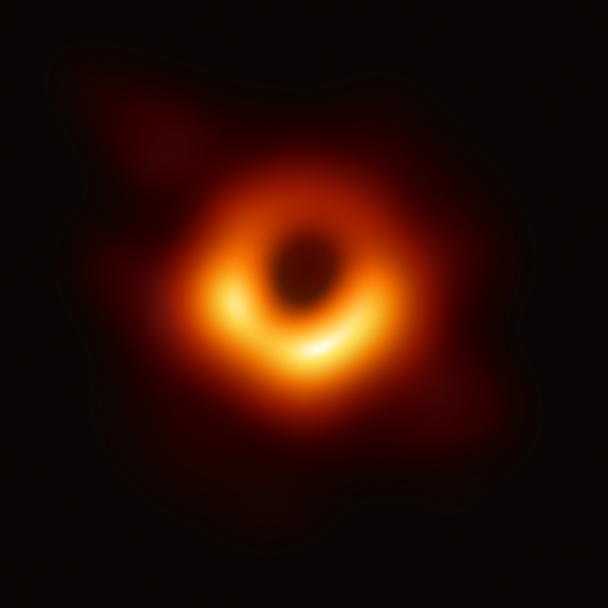

M87* (Messier 87*) är ett supermassivt svart hål som ligger i mitten av galaxen M87. Det var faktiskt det första svart hål som avbildades. Det gjordes av the Event Horizon Telescope. M87* har en massa som är cirka 6,5 * 109 gånger så stor som solen och är 3,7 biljoner kilometer i diameter. Om M87* var där solen är i solsystemet skulle den nå en distans som är runt 1000 gånger längden från solen till pluto.
